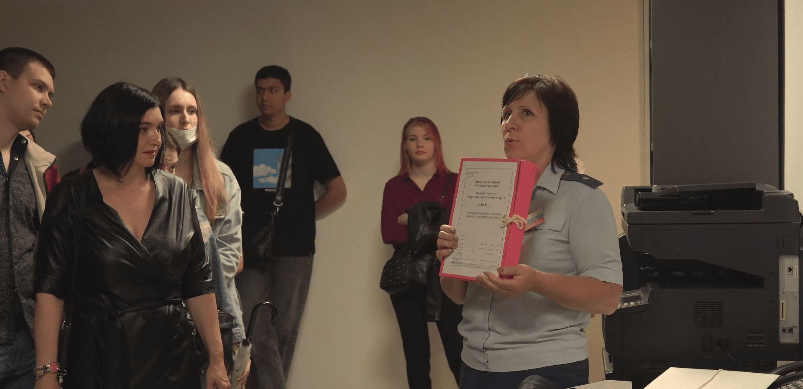

Мы познакомились с Григорием в суде, когда оба стали проходить учебную практику. Уже тогда передо мной стояла важная задача – написание дипломной работы. Но точного понимания, что именно я буду писать в практической части, не было. Меня всегда вдохновляла работа органов государственной власти и суда в частности, и мне искренне хотелось, чтобы люди изменили свой скептический взгляд на эту непростую и интересную сферу деятельности.

Пасмурная погода и легкий моросящий дождь стали отличным фоном для «солнечного» дворца правосудия. Делая селфи на фоне красивого здания с золотым гербом, я и поймала недоверчивый взгляд Гриши. Из разговора с ним я поняла, что мы находимся по разные стороны трудовой деятельности: я с информационной, а он с юридической. Именно тогда и появилась идея рассказать историю о том, как, казалось бы, в закрытом и недоступном для молодёжи месте не только обучают профессии, но и вдохновляют на творчество. Так я и решила создать свой проект.
9:00
Пожалуйста, покажите ваши документы и пройдите через рамку.
Суровый взгляд судебного пристава направлен на меня.
Уже через 10 минут мы прошли первый досмотровый пункт и направились по вымощенной розовым кирпичом дорожке к большому шестиэтажному зеркальному зданию с Фемидой. Здание Южного окружного военного суда достаточно молодое – всего 2,5 года, и это сразу заметно по красивому и просторному холлу. Масштабы не могут не восхищать!
На входе в здание нам снова предстояло пройти досмотр, личные вещи на ленту, а мне сказали пройти в капсулу (вспомнила аэропорт), чтобы во второй раз убедиться в отсутствии у меня запрещенных предметов. Далее ряд вопросов, к кому и зачем я пришла. Вот такие суровые правила предосторожности.
И вот мы в холле! Первое, что меня действительно поразило – люстры. Они как в театре и я не могла их не сфотографировать!
Пока мы ожидали своих кураторов практики мимо нас несколько раз прошли сотрудники суда в форме. Белые рубашки, погоны и темные брюки определенно идут молодым людям и мы с Гришей представили себя в этой форме.
К нам вышел помощник судьи, и мне сразу стало комфортнее.

Добрый день, меня зовут Виктор, могу взять ваши направления? – обратился он к нам. «Пройдемте, я провожу вас в отдел обеспечения судопроизводства по уголовным делам».
Вот тут и я попросила побыть с Гришей один день для написания данного материала.
Сотрудники отдела очень тепло встретили нас! Сразу показали рабочее место и стали давать задания.
Практикантов мы любим!
Сотрудники отдела
День в суде начинается раньше 9 часов утра, в холле суда можно встретить много адвокатов и прокуроров. Далее идешь на свое место, где пробуешь делать опись (своего рода справочный лист с указанием всех документов), или пробуешь написать протокол судебного заседания.
Получается не без труда. От того удивительно наблюдать за секретарями и помощниками судей, которые выполняют большое количество задач ежеминутно: пишут протокол, тут же обзванивают лиц участвующих в деле на предмет их присутствия, и наоборот принимают звонки от них. На самом деле это очень важная работа, без которой работа суда не будет выполняться. Должно быть, это все дело адаптации, но со стороны выглядит очень не просто.

Работа действительно кипит, все стараются как можно больше успеть, но при этом всегда выделяют время на помощь друг другу и даже мне, практиканту! В суматохе дел никогда не слышала от сотрудников суда «подожди», «потом», мне всегда улыбались и подробно отвечали на мои вопросы.
До начала судебного заседания оставалось еще 15 минут и мы с секретарем пошли к залу судебного заседания.
Около зала уже было много людей, людей с камерами сразу определили как «журналисты». Дела в окружном военном суде слушаются особенные – террористической направленности, что конечно привлекает большое внимание прессы!

Пока ждем начала процесса можно увидеть большой телевизионный экран, на который выведен список всех дел, которые находятся в производстве. Мы увидели на нем процесс, который ждем, посмотрели статью и даже успели почитать, что она означает.


«…наказываются лишением свободы на срок от пятнадцати до двадцати лет с ограничением свободы на срок от одного года до двух лет или пожизненным лишением свободы…»
Открывается дверь и выходит стройная темноволосая девушка в форме – секретарь судебного заседания. Она быстро проверяет явку участников процесса и приглашает всех пройти в зал.
Всего в суде 19 залов судебных заседаний, три из них оборудованы для рассмотрения уголовных дел с участием присяжных заседателей. Особое внимание уделено вопросам безопасности. Так, залы заседаний оборудованы системой видеоконференц-связи, обеспечены совещательными комнатами для судей с отдельным выходом, полностью исключающим их контакт с участниками процесса.
Одно из самых ярких разрывов шаблона – вид подсудимого. Я ожидала, что он выглядит как настоящий преступник, образ которого нам постоянно показывают в сериалах. На самом деле он выглядит, как и все, и не особо щедр на эмоции.
В большом и красивом зале правосудия всегда ждёшь яркие и красочные выступления прокуроров и адвокатов, поэтому стараешься следить как за одной, так и за второй стороной.
Прошу всех встать, – произнес адвокат, и все встали, как только тройка судей вошла в зал.
Судьи в мантии – это особенное впечатление, а видя всю работу изнутри, испытываешь трепет, что ты своими глазами видишь, как осуществляется правосудие.
Мне всегда казалось, что практиканты только бумажки раскладывают и до заседаний никогда не доходят, а тут сразу в первый день!
Установление личности подсудимого, подача ходатайства и прочтение обвинительного заключения – всё, чему учат на юридическом факультете, только видишь своими глазами.
Но больше всего впечатляет работа судей! Они внимательно слушают подсудимого, дают возможность ему высказаться и также выслушивают представителей сторон. Мне бы терпения не хватило.
Когда устаешь слушать стороны, невольно рассматриваешь зал судебного заседания и обращаешь внимание на детали.

Так, несмотря на удобное расположение секретаря судебного заседания, его фигура малозамеченная. Он фиксирует в тетрадь свои пометки и пишет ключевые фразы для протокола.
Через два часа объявили перерыв, и мы спустились в кабинет. Принесли шить дело!

Гриша вздохнул, ведь студенты не всегда любят это занятие, но посмотрев, как умело с этим справляются сотрудники суда, появляется уверенность, что сейчас все также быстро произойдет.
Мы успели за час, а затем наступил обеденный перерыв. К нам заглянули ребята секретари и пригласили с ними прогуляться до ближайшей кофейни.
В окружном военном суде всегда так! Ты быстро вливаешься в молодой коллектив и уже чувствуешь себя его частью. Понимаешь, когда говорят: «Я хочу идти работать только в Южный окружной».

За чашкой кофе мало можно услышать разговоры о работе, ее и так хватает в жизни. Секретари и помощники много расспрашивают про учебу, про преподавателей и делятся смешными воспоминаниями студенческих лет. Скажу честно – это очень подкупает.
Возвращаясь в суд, ребята рассказали, что проходит много общественных мероприятий для школьников и студентов, конкурсов, круглых столов и конференций. Наверное, стоило об этом догадаться, когда на входе увидели большой стенд, посвященный 9 мая.
Вторая половина дня – написание протокола. Это важнейший процессуальный документ, в котором записываются все существенные сведения о разбирательстве дела. От печатной версии еще не отказались, поэтому все, что записал диктофон, надо прослушать и зафиксировать.

Слушать сложно! Многие участник процесса говорят тихо, кто-то с акцентом. В такие минуты не завидуешь секретарям.
Гриша осилил только 8 страниц, завтра будет продолжать.
Начальник отдела попросила отнести тома дел в канцелярию и отпустила нас домой.
Мы вышли из кабинета, забрали стопку и пошли в канцелярию мимо приемной граждан. Наше любопытство взяло верх, и мы заглянули.
Большое помещение, разделенное стойкой и прозрачным стеклом, напоминало зону МФЦ. Гражданин спрашивал, как написать заявление, а дежурный помощник помогал.

Удобный стол и шаблоны значительно облегчают жизнь всем, кто пришел написать и подать документы.
Гриша дождался пока помощник примет заявление и когда гражданин ушел, спросил: «Как вам хватает сил по несколько раз в день повторять одно и то же?»
Люди приходят в суд не по хорошему поводу. Их что-то беспокоит, они уже находятся в стрессовой ситуации, поэтому важно относиться с пониманием и по-человечески. Тут как нельзя лучше работает правило: «Поступай с людьми так, как хочешь, чтобы поступали с тобой».
Помощник судьи
Возможно, мы сегодня не все узнали о деятельности окружного военного суда, но одно мы поняли точно: Суд – живой организм, и его душа – это люди.
Я точно знаю, что после окончания вуза пойду работать в суд и искренне верю, что это будет Южный окружной!
Элеонора Ивкина